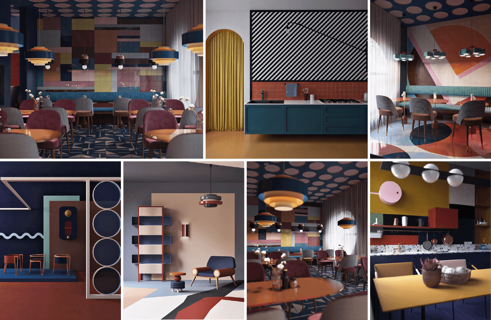

case study
Industry: hospitality
Creating a branding solution
for Vietnam’s newest café.
case study
Industry: hospitality
case study
Industry: Brokerage
Creating a branding solution for
Vietnam’s newest café.
BACKGROUND & CREATIVE CHALLENGE
Baristo is a café start-up in Vietnam. Founded by an expat, a chef with roots in South Africa and Taiwan, then newly arrived in Vietnam, the café brand prides itself on its creative menu, and places an equal emphasis on food and drinks.
Starting with its pilot store in Ho Chi Minh City, Baristo aims to grow into a coffee shop chain spanning multiple locations and multiple countries. The café is intended to serve an urban audience, offering up a friendly and sociable atmosphere, and a focus on good health and sustainability.
Baristo needed an expansion-friendly branding solution, aimed at enabling the chain to make an impact and establish a foothold within Vietnam’s coffee shop sector, but also adaptable enough to meet the needs of future expansion into additional markets.
Conducting interviews and workshops, Soyon analysed and assessed the café’s core offering, brand intention and market environment, and worked with the client to develop the brand’s nomenclature, brand identity and positioning.
Thereafter, we were tasked with designing a robust and extensible visual identity, including strategy and design for the café brand’s logo, its store interiors, and photographs, and finally, the production of packaging, stationary, sales collateral, and a comprehensive logo guide.
ASSESSMENT & UNDERSTANDING
Pursuing innovation and ingenuity, Baristo sought to delight and engage customers by offering them new experiences and striking sights. Presentation and taste are given equal attention. Drinks and meals feature bold combinations of colour and texture, resulting in something that is as enjoyable to the eyes as it is to the taste buds. The ideal that the cafe strives for is that the drink or meal that you order should make your mouth water, creating anticipation, which then, when you eat it, turns to satisfaction.
A selection of tea and coffee-based drinks were included — creative re-imaginings of time-tested classics and wholly novel creations. Presenting strong imagery, the beverages are colourful, varied and attractively decorated. Meals consist primarily of bread-based options, with an array of toasted and untoasted sandwiches, bagels and buns. Several healthy options are also available.
Desserts are presented as an attractive add-on to the drinks, with a variety of combo options available. Some particularly striking dessert, drink and meal options are intended as time-limited promotion items. Table combo options, such as platters, and jugs or carafes for drinks, are considered in addition to other upselling ideas.
Mirroring the above, Baristo’s brand intention is to wow and engage customers with novel tastes and striking looks. The aim is to surprise, putting smiles on patrons’ faces. The café isn’t scared to try new things with the menu. It aims to push taste frontiers, introducing Vietnam to unique new creations and re-imaginings of beverages and cuisine from around the world.
Developing sociable, friendly, and welcoming environments, the brand wants to create an atmosphere that’s comfortable and inviting — the kind of place where people can feel at home, laughing and chatting with friends, while sharing a meal or a drink together.
Developing sociable, friendly, and welcoming environments, the brand wants to create an atmosphere that’s comfortable and inviting — the kind of place where people can feel at home, laughing and chatting with friends, while sharing a meal or a drink together.
Pursuing innovation and ingenuity, Baristo sought to delight and engage customers by offering them new experiences and striking sights. Presentation and taste are given equal attention. Drinks and meals feature bold combinations of colour and texture, resulting in something that is as enjoyable to the eyes as it is to the taste buds. The ideal that the cafe strives for is that the drink or meal that you order should make your mouth water, creating anticipation, which then, when you eat it, turns to satisfaction.
A selection of tea and coffee-based drinks were included — creative re-imaginings of time-tested classics and wholly novel creations. Presenting strong imagery, the beverages are colourful, varied and attractively decorated. Meals consist primarily of bread-based options, with an array of toasted and untoasted sandwiches, bagels and buns. Several healthy options are also available.
BRAND IDENTITY
We take educated young adults who look for enjoyment and satisfaction in their lives, and who care about themselves, their appearances, the lives they lead, and the world around them, away from their repetitive food routines by creating a brand that aims to wow the senses — delivering unexpected, interesting, striking, and delectable dishes and drinks, in an environment that engages and welcomes, fostering a sociable atmosphere.
The brand’s primary focal points are its dedication to creating wonder with the meals and beverages it offers, and the sociable atmospheres it fosters. Secondary factors serve a supporting role to the primary focal points, helping to orient the brand where there are opportunities to create further differentiation. These supporting focal points are the brand’s earnest and socially responsible outlook, and its commitment to encouraging good health.
We engage with customers by bringing them out of their usual routines, and offer them striking dishes and drinks with new and unexpected flavours, in a welcoming, sociable environment.
A brand’s name is its first communication opportunity. It should reflect the brand pillars. A café brand that is about creating wonder and fostering sociability, suits a name that evokes
inventiveness, and amiability.
Identifying and shortlisting a selection of names, we analysed them according to three criteria.
Is the name easy to remember? Easy to communicate? Does it have the potential for sounding familiar?
Does the name reflect the brand pillars well? Does it support the brand’s personality and story?
Does the name separate the brand from competitors clearly and strongly?
| Memorability | Suitability | Differentiation | |
|---|---|---|---|
| 1st | Fresh | Lekker | Lekker |
| 2nd | Baristo | Baristo | Baristo |
| 3rd | Charlie's | Charlie's | Fresh |
| 4th | Lekker | Fusion | Fusion |
| 5th | Fusion | Fresh | Charlie's |
COMPETITOR ASSESSMENT
As with the logos, clear trends can be seen in competitors’ façades, interiors, and staff outfits. The signs on façades are all white on a darker background, and the architecture all comes from the same template. There is some individualised nuance in the interior design, but it all arises from the same set of long-established design codes. There’s nothing there one wouldn’t commonly expect from a coffee shop.
Many try to convey a feeling of naturalness through wood or roughness. Where there’s stylishness, it’s trendy, rather than modish or contemporary. There are also many forced artsy touches: the paintings, the quotes, the handwriting on menus, the corporate or marketing messages on the wall, the similar typography games — all the product of bygone, over-exploited design trends.
In the packaging too, much is the same. Limited R&D capabilities and the high cost of production likely contribute, causing most to settle for the same solutions for glasses and cups. The drinks themselves are also very similar. Each competitor has their own version of a range of fruity and creamy drinks, but there’s ultimately little to set their offerings apart.
In every sphere, conformity is strongly in evidence. These circumstances create an excellent opportunity for a new brand to differentiate itself by bringing something more distinctive.
logo
In order to be able to stand out as a brand, rather than as just a single café, Baristo needs to build a sustainable distinctiveness. Speed is also important. In this very competitive market, with numerous large and small players, with many established brands and coffee shops, it is essential to make an impression quickly. Like a snowball setting off an avalanche, the brand’s impact must be able to quickly grow.
In order to be able to stand out as a brand, rather than as just a single café, Baristo needs to build a sustainable distinctiveness. Speed is also important. In this very competitive market, with numerous large and small players, with many established brands and coffee shops, it is essential to make an impression quickly. Like a snowball setting off an avalanche, the brand’s impact must be able to quickly grow.
Moving against the flow of competitors’ visual identities, the question asked is, what would be an unexpected logo design style for a café brand named Baristo?
The Elements logo concept draws inspiration from the basic elements of taste: sweetness, savouriness, saltiness, sourness and bitterness.
There are many icons that might potentially represent, symbolise, or otherwise convey the feeling Baristo embodies, but none could be adequate in effectively representing its depth. The logo for Baristo needs to be conceptual, not explanatory. If the wonders it creates are made of the basic elements of taste, then the logo will be made of the basic elements of design: the circle, the square, and the triangle.
The same way Baristo experiments with different taste combinations, we experiment with different combinations of the basic geometric shapes, leading us along toward a logo.
Exploring this combining of geometries further, we come upon a system with a lot of possibilities. It opens perspectives for the development of a unique, organic visual language, and a new style of communication.
interiors
Baristo’s dual focuses are wonderful food and wonderful moments. These are what makes up the Baristo brand experience — the dishes the café creates and the interior environments customers are welcomed into. Other aspects, such as the logo, the menu, the name cards, and the visual identity developed through collaterals and other communication materials, are all there purely to help communicate what these two establish.
Building upon the foundation laid by the ‘Elements’ concept in the logo design, the interiors concept sought to go beyond simple visual style, and create a conceptual branding language. As with the logo, the interiors concept draws inspiration from the elements of taste, and in turn from the basic elements of graphic design. The visuals are an expression of simple elements coming together in different ways, resulting in the creation of spaces that are harmonious, inviting and surprising.
With the basic elements of design as starting point, the interiors concept finds additional inspiration in the geometric abstraction of the Suprematist and Constructivist art movements.
A language of shapes and colours.
photography
The Baristo photography style is an integral part of the brand’s visual identity, helping to develop and demonstrate its distinctiveness, setting it apart from competitors, and boosting brand awareness and perception. Extending and developing the ‘Elements’ and ‘Language of shapes and colours’ concepts chosen for the brand’s logo and interiors, the photography style forms part of a unified visual language.
It provides photographers with guidance in framing and lighting product and portrait photos, and in selecting the clothing styles, accessory styles, and posing of models and other subjects. In line with the concepts already created, the photography style emphasizes geometry and sharpness, expressing a minimalist style. Anything that would soften the imagery (blur, bokeh, etc.) is avoided. The brand being about ‘creating togetherness’, the portraits have to be inviting, warm, friendly.
Baristo’s food and drinks are themselves composed of the basic taste elements that inspired the ‘Elements’ logo concept, and in turn gave rise to the ‘Language of shapes and colours’ interiors concept. Coming full circle, these concepts inform the product photography style. As before, inspiration is also drawn from the Suprematist and Constructivist art movements.
The fundamental aspect in photography is composition, which is achieved with line, shape, form, texture, pattern, colour and space. For the photography to support the brand visual ID concept and creative direction, those basic elements of composition should be in obvious evidence.
The food and the drinks are the main subject. With strong compositions, the photos must be built as in a painting: obvious geometric intentions and lines, clean shapes, sharp forms and volume, clear and strong shadows. Photographs should use open depth of field, with intended view lines, resulting in almost geometric-like photography.
More dynamic, this type of framing offers more opportunities than headshots and half-body shots. Can be single or two people (not recommended however, as it would be more challenging).
The models can be the centrepiece of the composition, or part of a set-up.
No perspective, no distortion, no bird’s-eye or low angle shots.
The clothing style must be in line with the brand personality/identity and should also connect with the target audience.
The clothing style must be in line with the brand personality/identity and should also connect with the target audience.
The colour palette should be in line with the one developed for the marketing/sales material and the interiors. The clothing colours will create harmonious contrasts with the background. Nothing pastel or bright/flashy and ‘in your face’.
Consider:
- Stripes.
- Printed or sewn, basic geometric shapes (square, circle or triangle).
- Patterns made of the basic geometric shapes (but the size of the shapes would have to be considered, the pattern shouldn’t look like a wallpaper).
Baristo is about a love for food and enjoyable food moments. All of the images made for Baristo should send that message: the Baristo people love what they create, what they sell. In the portraits photos, the ‘models’ should interact with a meal or a drink.
Photographs should demonstrate some personality, reflecting individual character.
LOGO GUIDE & APPLICATIONS
Logo guide
Baristo examines the quintessential café offering, distilling it down to its fundamentals, uncovering those elements that underlie all, and from that creates an experience — striking out in search of the exceptional. Weaving together the basic elements of taste, testing and tasting combinations of sweetness, savouriness, saltiness, sourness and bitterness, Baristo cooks up a feast of flavours, smells and sights, bringing wonder to customers’ every sense.
Making mouths water, delectable and delightful dishes and drinks are carried to tables, where they’re met by good cheer. This is a place of togetherness. A place for laughter, shared conversation, and good times. Friendly and welcoming, Baristo supports and nurtures a sense of sociability — providing opportunity and facility for people to communicate and connect, encouraging conversation and conviviality.
Baristo sets out to take modern, urban people, who look for enjoyment and satisfaction in their lives, who care about themselves, their appearances, the lives they lead, and the world around them, away from their food routines by creating a brand that wows the senses, delivering unexpected, interesting, striking, and delectable beverages and meals, in an environment that engages and welcomes, fostering a sociable atmosphere.
Baristo’s visual identity takes its cues from the kitchen. Here, armed with the freshest ingredients and the tools of their trade, our chefs work with the basic elements of taste, finding new expression in the limitless possibility this affords them. Just the same, we construct our visual brand identity from the basic elements of design — channelling the intentions enshrined in our brand pillars into the creation of an ID that’s engaging and impactful.
This focus on the fundamental, on basic elements, led us to the art movements of Suprematism and Constructivism. Taking inspiration from their geometric abstraction and clarity of purpose, we borrow from them some of their core elements, enlisting them in pursuit of our aims.
From Suprematism we take an ethos of design purity. It’s a design philosophy that uses elemental shape and colour to create form, communicating feeling and sensation, not through pictorial image, but with pure content and arrangement. It expresses, utilising only art’s barest essentials. As a communication tool, Suprematist design reaches out to the core of understanding, speaking volumes, while barely needing to say anything at all. It’s communication at its most direct, and most visceral.
Constructivism too gives us geometric abstraction, but it also gives us utility. Constructivist design holds that art should be useful. Rather than composition, Constructivism is interested in construction. This is design that is built, approaching art as engineer. Equipped with geometry and a scientific understanding of materials, Constructivism uses simple design concepts to create complex interplays of expression and utility.
These tools in hand, we craft a language of shapes and colours — able to speak even without words. Every customer touch point is seen as an opportunity to communicate the Baristo identity, and create something distinctive and memorable. With three simple geometric shapes, the circle, square and triangle, a visual alphabet was formulated. This conceptual branding language gave rise to the Baristo logo. The interiors take the concept further. Igniting the imagination, shape and colour create an environment. It’s a space that’s unmistakeable. Baristo interiors blend art and engineering. They’re all inherently instagrammable, but they’re also able to create atmosphere. Through smart design, fixtures and furnishings set up and reinforce group-based interactions and communication — fostering a feeling.
With every step, the Baristo visual brand identity delivers something. Not only is the brand’s character and personality shared, but the brand’s distinctiveness is developed. Through creativity and surprise, customers are engaged. Through ingenuity and craft, an atmosphere of sociability is formed. With every step, the Baristo visual identity creates wonder and creates togetherness.
applications
case study
Industry: hostpitality